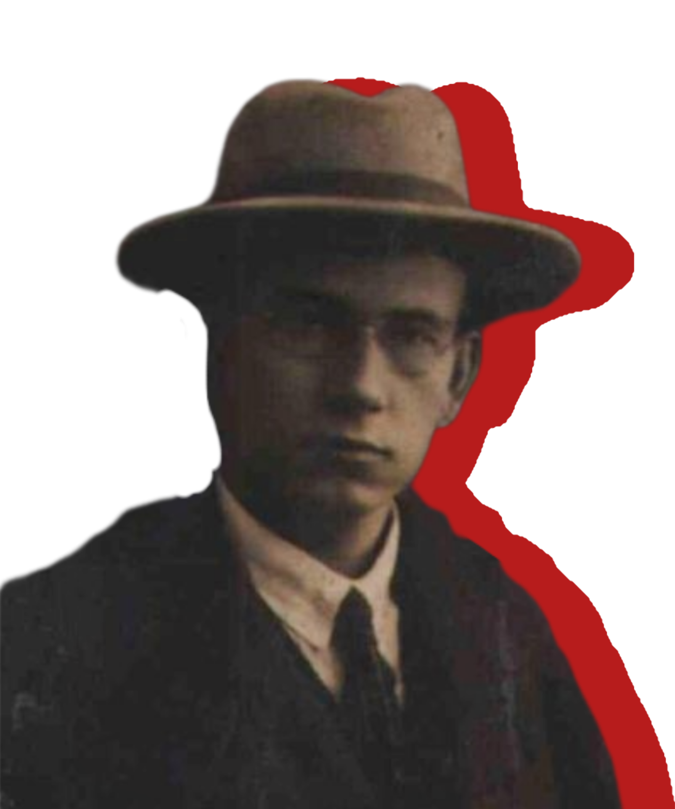

Приходько Антон
1891-1938
«Час вимагає не гучних фраз, а конкретних справ»
1891-1938
«Час вимагає не гучних фраз, а конкретних справ»
Антон Приходько був значною фігурою в історії радянської України. Його діяльність як постійного представника УСРР при Уряді СРСР свідчить про вагомий внесок у представленні інтересів республіки на союзному рівні. Будучи членом ВУЦВК майже всіх скликань до десятого включно, Приходько брав безпосередню участь у державному будівництві та прийнятті важливих рішень в УСРР. Його тривала робота на високих державних посадах підкреслює його вплив та авторитет у тогочасній політичній системі.
Трагічним завершенням життя Антона Приходька став його розстріл 29 січня 1938 року в Архангельську. Ця подія стала ще однією чорною сторінкою в історії України, позначеною політичними репресіями. Незважаючи на його попередні заслуги перед республікою, він став жертвою тогочасного режиму. Його розстріл символізує долю багатьох українських діячів, які віддали свої сили розбудові держави, але стали жертвами безжальної політичної машини.
Народився 1891 року в Кубанській області.
У 1907 році він відвідував український соціалістичний кружок середньої школи міста Ставрополь, а згодом закінчив Ставропольську вчительську семінарію. У 1915 році був студентом Московського університету та членом есерівської групи.
З 1916 року — член Української партії соціалістів-революціонерів (УПСР) під прізвищем «Професор». У 1917 році, до початку Жовтневої революції, вперше опинився в Україні, приїхавши до Києва, і став кандидатом у члени Українських Установчих Зборів від УПСР за участю Селянської спілки по Полтавському виборчому округу.
16 січня 1918 року був заарештований разом із майже всією лівою групою керівництва УПСР. З червня 1918 року став членом Комуністичної партії (більшовиків) України (КП(б)У). 29 квітня 1919 року подав заяву про вихід з членів Центрального Комітету УПСР. У 1919–1920 роках був секретарем Української комуністичної партії (боротьбистів) і касиром її Центрального Комітету у червні 1919 року.
У 1920–1929 роках очолював колегію Державного видавництва України, а в 1920–1930 роках був секретарем Центральної комісії українізації радянського апарату при РНК УСРР. У 1921 році входив до редколегії критико-бібліографічного часопису «Голос Друку», очолював Всеукраїнську видавничу комісію при РНК УСРР та став членом ВУЦВК VI скликання.
З кінця 1921 до травня 1922 року був уповноваженим від Полтавської губернії під час мобілізації для підготовки посівної кампанії в Україні. З травня 1922 до листопада 1924 року — Постійний представник УСРР при Уряді СРСР. 12 вересня 1922 року був зарахований на перший курс Московського інституту народного господарства ім. К. Маркса. З грудня 1924 до квітня 1926 року працював радником Повноважного представництва СРСР у Чехословаччині. З 27 січня 1926 по 1927 рік був заступником наркома освіти УСРР Олександра Шумського, а з 1926 по 1930 роки — заступником Генерального прокурора УСРР.
У 1926 році став членом Державної правописної комісії. З 1927 по 25 грудня 1929 року був заступником наркома освіти УСРР Миколи Скрипника. З 25 травня по 3 червня 1927 року брав участь у Конференції з обговорення проекту правопису, а в 1928 році був членом Президії Державної Правописної Комісії. 9 серпня 1929 року мав партійний квиток №0751622 та був визнаний перевіреним за результатами засідання Перевірочної Комісії КП(б)У при НКОсвіти УСРР Журавлівського райкому м. Харкова. З 9 березня по 19 квітня 1930 року головував на судовому процесі Спілки визволення України.
З червня 1930 року обіймав посаду заступника народного комісара юстиції УСРР, у 1930–1931 роках був відповідальним редактором журналу «Вісник радянської юстиції», а в 1931–1933 роках — журналу «Революційне право». До 31 грудня 1933 року був головою арбітражної комісії при РНК УСРР. Того ж дня його виключили з КП(б)У за нещирість у поясненнях щодо зв’язків із контрреволюційними, націоналістичними елементами, а згодом його заарештувало ДПУ СРСР у Харкові як члена та керівника Харківської терористичної організації та учасника контрреволюційної української повстанської організації, що ставила за мету повалення радянської влади збройним шляхом.
4 червня 1934 року був засуджений до 10 років виправно-трудових робіт судовою трійкою Колегії ДПУ СРСР. Із липня 1934 до кінця 1936 року перебував на острові Вайгач (бухта селища Амдерма), а з січня по листопад 1937 року — в селищі Чибью.
У листопаді 1937 року написав останнього листа дружині, який вона отримала лише у січні 1938 року. 21 грудня 1937 року був засуджений до смертної кари трійкою Управління НКВС Архангельської області, а 29 січня 1938 року розстріляний разом із Щепкіним Іваном Івановичем, Музиченком Миколаєм Петровичем та Івановим Володимиром Васильовичем.
6 грудня 1957 року був посмертно реабілітований Військовим трибуналом Київського військового округу.